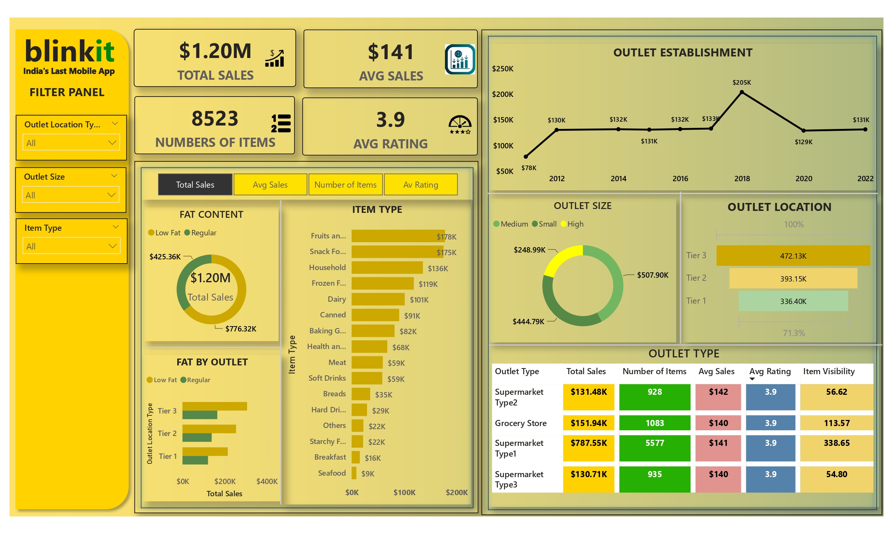
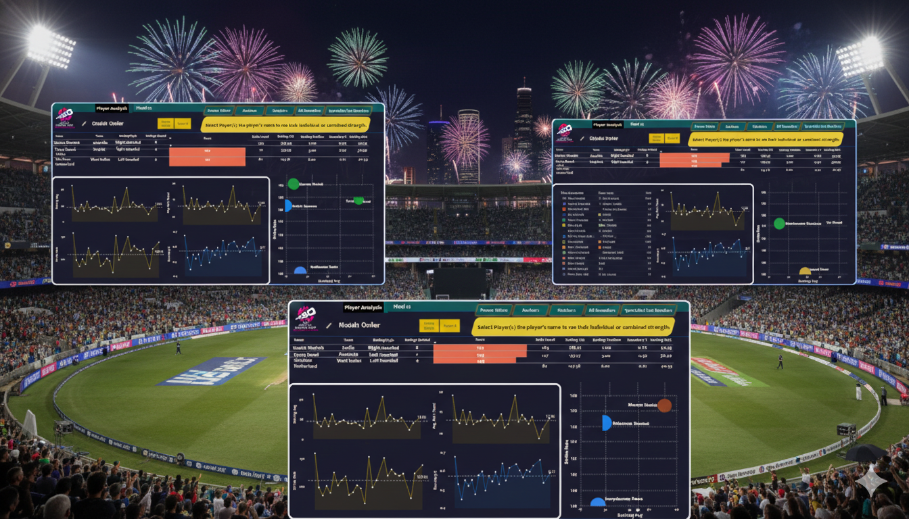

Transforming Data into Insights
Hello! I'm a passionate technology enthusiast with a strong academic background in computer applications. I recently completed my Master of Computer Applications (MCA) in 2023, building upon my Bachelor of Computer Applications (BCA) degree from 2021.
I am eager to pursue a career in Data Analytics and Business Analytics, where I can leverage my technical skills and analytical mindset to solve complex problems and derive meaningful insights from data.
My goal is to contribute to data-driven decision making and help organizations unlock the full potential of their data assets. I'm passionate about transforming raw data into actionable insights.
With a solid foundation in data analysis, Power BI, Excel, Advance Excel and SQL, I'm ready to take on challenging projects that push the boundaries of what's possible with data.

The Blinkit Sales Report project focuses on analyzing sales data to understand revenue patterns, order trends, and product performance. It includes data cleaning, transformation, and visualization to create interactive dashboards and detailed reports that provide actionable insights for business decision-making. tracking.

This project analyzes ICC T20 World Cup 2024 data to generate insights on team and player performance. Match and player data were cleaned and analyzed to identify top performers, consistent teams, and key match-winning factors through clear visual insights using Power BI and Advance Excel
Developed a Python script to analyze share market portfolios by processing CSV data, fetching live prices via BSEdata Python Library, calculating profit/loss and deviations, logging results, storing data in MongoDB, generating Excel reports, and emailing the final statement using SMTP.
I am a Post Graduate in MCA, equipped with practical knowledge of software engineering, application development, and data analysis. During my academics, I worked on multiple projects that strengthened my skills in Python, SQL, and web technologies.
BCA graduate with a strong foundation in programming, databases, and web technologies. Experienced in building academic and personal projects with practical problem-solving skills.
Connect With Me